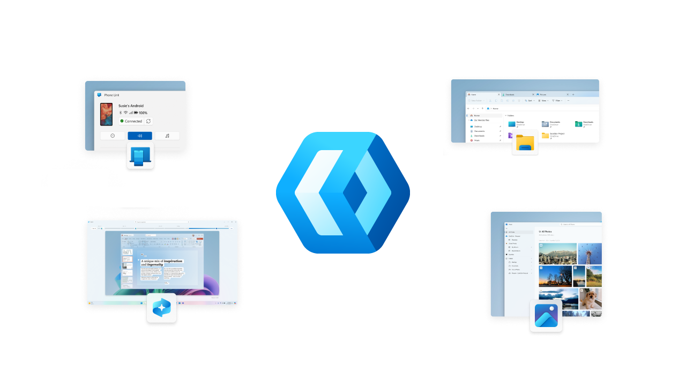

WinUI development in the open

WinUI is the user interface layer for modern controls and styles for building native Windows applications which ships as part of Windows App SDK. Last year Microsoft announced the WinUI rollout towards open collaboration, which would be a phased rollout towards open collaboration to support a more open and collaborative future. Last week Microsoft announced that WinUI development is now happening on GitHub, in Repository at github.com/microsoft/microsoft-ui-xaml.
WinUI mainline development is now happening on GitHub with WinUI engineers and other developers at Microsoft creating branches, opening pull requests along with reviewing, validating and merging changes using the WinUI GitHub repository. Day-to-day engineering work on WinUI is now happenning in the open so that every developer can follow progress as it happens instead of waiting for those changes to be shipped as part of Windows App SDK.
WinUI pull requests at this stage are coming from developers in Microsoft, to prove the end-to-end contribution workflows, validation, documentation and release process, with a simple goal, when community pull requests open up contributors should have a reliable and predictable pipeline to work with and the team at Microsoft is working towards that goal. Microsoft will share broader open-source goals and update as next stages for WinUI take shape.
WinUI before this has been gaining additional functionality from Microsoft including inking support, something I've been waiting to be added for many years, is available in the latest experimental build of Windows App SDK delivering InkCanvas, InkToolbar and InkPresenter. Open sourcing WinUI will further empower third-party platforms that support it and community contributions, when possible, will allow WinUI to evolve faster and further.